signature @ 16 · 24 · 32 · 48 px tall
 favicon 16 px ×8
favicon 16 px ×8 favicon 32 px ×8
favicon 32 px ×8A brush-pen signature monogram in capitals, AM., with the full name set underneath in widely tracked capitals. Drawn from hand-placed pen strokes (a flat nib held at a fixed angle, so down-strokes are thick and up-strokes thin) and converted to one clean filled outline. One colour, no effects. Regenerate with node brand/build-signature.mjs.
One flat shape in one colour. Nothing depends on a second colour, outline, shadow or gradient.

white on blackLeft: actual size. The hairline flourish of the regular signature turns grey below about 24 px tall, though the letters still read. For anything smaller use the bold master (favicon and site header use it): it reads as "AM" at 16 px and is crisp at 32 px.
favicon 16 px ×8favicon 32 px ×8Heavily blurred, the silhouette stays a distinctive leaning "AM" with a rising tail.

blur, reversed yellow favicon in greyscale (still high contrast)1-bit thresholdfavicon / app icon (yellow)
yellow favicon in greyscale (still high contrast)1-bit thresholdfavicon / app icon (yellow)The signature sits inside a safe area, so circle, squircle and square crops never touch it.
| Rule | Value | Status |
|---|---|---|
| Construction | Hand-placed pen centre-lines, flat nib at −28°, brush swell on the flourish, 11° lean. Source: brand/build-signature.mjs. | Defined |
| Lockup | Signature, then the full name in tracked capitals (+36%), centred under the letters. Name line ≈ 1.1× the signature's width. | Defined |
| Clear space | ¼ of the signature's height on all sides. | Defined |
| Minimum size | Regular signature 24 px tall (screen) · 12 mm (print). Below that use the bold master; favicon from 16 px. | Verified on pixels |
| Colour | Black or white only. Yellow #ffcc00 only behind the favicon / app icon, or as one small rule in social cards. | One colour |
| Name typeface | Tajawal Medium outlines, capitals. Interim until Heming is available. | Interim |
| Known weak spots | Hairline flourish is faint under 24 px · a hand pixel-hinted 16×16 favicon would be crisper · Arabic lockup not yet designed. | Open |